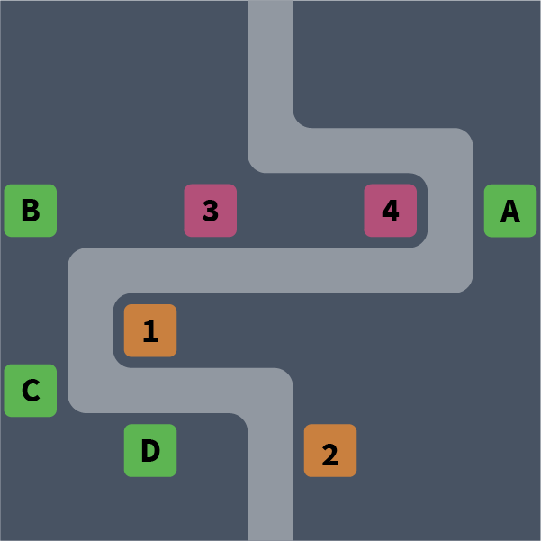

Tower Defense Layout (v3)
Recommended layout for Tower Defense version 3 (currently in beta testing and available on selected servers)

-
On Hero Tower 3 and 4, use melee heroes (heroes carrying a sword).
Melee heroes have short attack range, but they can deal damage to multiple invaders with each attack. Invaders slow down when they turn, and placing melee heroes at the turns will maximize their damage. Harold is recommended.
-
On Hero Tower 1 and 2, use range heroes (heroes carrying a bow or a magic staff).
Range heroes starts dealing long-range attack as soon as the invaders enter the stage, so they should be placed as far back as possible.
-
On Unit Tower A, use Goblin when you see Ice (blue) invaders. Otherwise, use Ice Wizard.